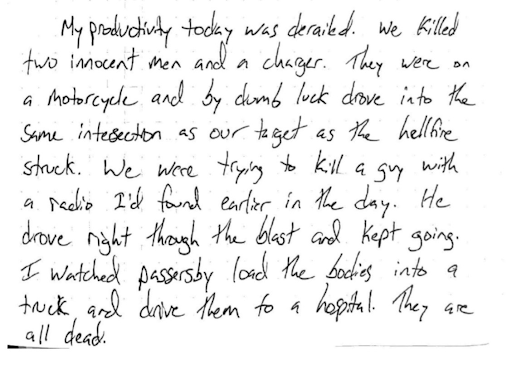

The US Department of the Treasury poisoned alcohol during Prohibition — and people died: The 18th Amendment, which took effect in January 1920, banned the manufacture, sale, and transportation of alcohol — but not consumption. Despite the government's efforts, alcoholism actually skyrocketed during the era. To keep up with America's thirst, bootleggers not only created their own alcohol but also stole industrial versions, rendered undrinkable by the inclusion of certain chemicals (namely methyl alcohol). Liquor syndicates then employed chemists to "re-nature" the alcohol once again, making it safe for consumption, according to Deborah Blum, author of "The Poisoner's Handbook: Murder and the Birth of Forensic Medicine in Jazz Age New York." By mid-1927, however, the US government added much deadlier chemicals — kerosene, chloroform, and acetone among those most well known — which made alcohol more difficult to render consumable again. Adding 10% more methyl alcohol caused the worst effects. Although New York City's chief medical examiner, Charles Norris, tried to publicize the dangers, in 1926, poisonous alcohol killed 400 in the city. The next year, 700 died. The US Public Health Service lied about treating black men with syphilis for more than 40 years: In 1932, the Public Health Service collaborated with the Tuskegee Institute to record the history of syphilis in the black male community, hoping to justify a treatment program. Called the Tuskegee Study of Untreated Syphilis in the Negro Male, the study initially included 600 black men — 399 with the disease and 201 without. While the men were told they would receive treatment, however, the researchers never provided adequate treatment for the disease. Even when penicillin became the preferred and available treatment for syphilis, researchers kept their subjects in the dark. Although originally planned to last only six months, the experiment continued for 40 years. Finally, in 1972, an Associated Press article prompted public outrage and a subsequent investigation. A government advisory panel deemed the study "ethically irresponsible" and research ended almost immediately. As a result, the government settled a class-action lawsuit out of court in 1974 for $10 million and lifetime health benefits for all participants, the last of whom died in 2004. More than 100 million Americans received a polio vaccine contaminated with a potentially cancer-causing virus: From 1954 to 1961, simian virus 40 (SV40) somehow showed up in polio vaccines, according to the American Journal of Cancer. Researchers estimate 98 million people in the US, and even more worldwide, received contaminated inoculations. Jonas Salk, creator of the inactivated-polio vaccine, used cells from rhesus monkeys infected with SV40, according to president of the National Vaccine Information Center Barbara Fisher, who testified before the Subcommittee on Human Rights and Wellness in the US House of Representatives on this matter in 2003, after researching the situation for 10 years. The federal government changed oral-vaccine stipulations in 1961 — which didn't include Salk's inactivated polio vaccine — specifically citing SV40. But medical professionals continued to administer tainted vaccines until 1963, according to Michael E. Horwin writing for the Albany Law Journal of Science and Technology in 2003. And even after 1961, the American Journal of Cancer found contaminated oral vaccines. Although researchers know SV40 causes cancer in animals, opinions vary on a direct link between the virus and cancer in humans. Independent studies, however, have identified SV40 in brain and lung tumors of children and adults. The Centers for Disease Control did post a fact sheet acknowledging the presence of SV40 in polio vaccines but has since removed it, according to Medical Daily. Parts of the Gulf of Tonkin Incident, which led to US intervention in Vietnam, never happened: After evading a torpedo attack, the USS Maddox reportedly engaged three North Vietnamese boats in the Gulf of Tonkin on both August 2 and August 4, 1964, according to the Pentagon Papers. Although without US casualties, the events prompted Congress to pass a resolution allowing President Lyndon Johnson to intervene in the Southeast Asian country. Talk of Tonkin's status as a "false flag" for US involvement in the Vietnam War has permeated public discourse almost since the time of the attacks, especially after the government admitted that the second incident may have involved false radar images. But after resisting comment for decades, the National Security Agency finally declassified documents in 2005, admitting the incident on August 4 never happened at all. Those involved didn't necessarily intend to cover-up the incident to propagate a war. But the evidence does suggest "an active effort to make SIGINT fit the claim of what happened during the evening of 4 August in the Gulf of Tonkin," according to NSA historian Robert J. Hanyok. Military leaders reportedly planned terrorist attacks in the US to drum up support for a war against Cuba: In 1962, the Joint Chiefs of Staff approved Operation Northwoods, a covert plan to create support for a war in Cuba that would oust communist leader Fidel Castro. Declassified government documents show considerations included: host funerals for "mock-victims," "start rumors (many)," and "blow up a U.S. ship in Guantanamo Bay and blame Cuba." They even suggested somehow pinning John Glenn's potential death, should his rocket explode, on communists in Cuba. The advisers presented the plan to President Kennedy's secretary of defense, Robert McNamara, according to investigative journalist James Bamford's book, "Body of Secrets." We don't know whether McNamara immediately refused, but a few days later, Kennedy told US Army Gen. Lyman L. Lemnitzer, the plan's poo-bah, that the US would never use overt force to take Cuba. A few months later, Lemnitzer lost his position. "There really was a worry at the time about the military going off crazy and they did, but they never succeeded, but it wasn't for lack of trying," Bamford told ABC News. The government tested the effects of LSD on unwitting US and Canadian citizens: Under the code name "MKUltra," the US government ran a human-research operation within the CIA's Scientific Research Division. Researchers tested the effects of hypnosis, sensory deprivation, isolation, torture, and, most memorably, LSD, on US and Canadian citizens. Most had no idea. To conduct these experiments, the CIA paid prisons, hospitals, and other institutions to keep quiet. The department even enticed heroin addicts to participate by offering them heroin, according to documents from a joint hearing to subcommittees of Congress, where then-Sen. Ted Kennedy, chairman of Health and Scientific Research subcommittee, spoke. That day, he regaled Congress with "chilling testimony." Over 30 universities became involved in various studies. Notably, many lacked oversight by medical or scientific professionals. At least one participant, Frank Olsen, died, reportedly from suicide after unknowingly ingesting LSD. In January 1973, the CIA's then director, Richard Helms, ordered the destruction of all documents pertaining to MKUltra. When Congress looked into the matter, no one, not even Helms, could "remember" details. Through a Freedom of Information Act (FOIA) request, more documents were located, but the full timeline remains incomplete. The events inspired investigative journalist Jon Ronson's best-selling book, "The Men Who Stare At Goats," now a movie of the same title starring George Clooney. In 1974, the CIA secretly resurfaced a sunken Soviet submarine with three nuclear-armed ballistic missiles: The CIA's secret "Project Azorian" aimed to raise a sunken Soviet submarine from the floor of the Pacific Ocean to retrieve three nuclear-armed ballistic missiles, each carrying a one-megaton nuclear warhead. With President Nixon's approval, CIA director Richard Helms placed all the plans in a secret file called "Jennifer," thus keeping the information from everyone but a select number of government officials. After a FOIA, the NSA finally published an article from the CIA's in-house journal, Studies in Intelligence, revealing that the department succeeded in resurfacing portions of the sub, named K-129. The CIA redacted text in these documents that prevent determining the operation's exact level of success, but the crew of the Glomar Explorer, the recovery ship, did haul contents to Hawaii for unloading. The US government sold weapons to Iran, violating an embargo, and used the money to support Nicaraguan militants: In 1985, senior officials in the Reagan administration facilitated the sale of arms to Iran, then under embargo. The government, with the National Security Council's Oliver North acting as a key player, later used the profits to fund the Contras, anticommunist rebels, in Nicaragua. The whole situation began with seven American hostages taken by a hostile group in Lebanon with ties to Iran. Through an elaborate exchange involving Israel, the US planned to sell weapons to Iran in exchange for the hostages' freedom. The situation quickly derailed, although the Lebanese did release all but two hostages. After a leak from an Iranian, the situation finally came to light in 1986. After repeatedly denying any involvement, the Reagan administration underwent 41 days of congressional hearings, according to Brown University's research project on the scandal. They subpoenaed government documents from as early as 1981 and forced declassification of others. Reagan's involvement in and even knowledge of the situation remains unclear. The hearings never labeled the sale of weapons to Iran a criminal offense, but some officials faced charges for supporting the Contras. The administration, however, refused to declassify certain documents, forcing Congress to drop them. A public-relations firm organized congressional testimony that propelled US involvement in the Persian Gulf War: In 1990, a 15-year-old Kuwaiti girl identified only as "Nayirah" testified before Congress that she witnessed Iraqi soldiers pulling infants from their incubators at a hospital and tossing them to the ground to die. A later investigation revealed that PR giant Hill & Knowlton arranged her testimony for a client, Kuwaiti-sponsored Citizens for a Free Kuwait, and furthermore that Nayirah was the daughter of Kuwait's Ambassador to the US, according to The New York Times. Tom Lantos, a representative from California who cofounded the committee that heard Nayirah, coordinated the whole thing. Perhaps not coincidentally, his committee rented space in the PR firm's headquarters at a reduced rate. Citizens for a Free Kuwait would go on to donate money to foundations with ties to said committee sometime after Iraq's invasion of Kuwait. At first, Amnesty International affirmed the girl's testimony. But after reinvestigation, the group and other human-rights organizations switched positions. They didn't necessarily question the accuracy, just her withheld bias. Nayirah's testimony helped build support for the Persian Gulf War, though Congress would have likely pursued involvement without her words.
1 Pre-1887 interventions 1.1 1805: Tripolitania 1.2 1846–1848 Annexation of Texas and invasion of California 1.3 1865–1867: Mexico 2 1887–1912: U.S. Empire, expansionism, and the Roosevelt administration 2.1 1880s 2.1.1 1887–1889: Samoa 2.2 1890s 2.2.1 1893: Kingdom of Hawaii 2.3 1900s 2.3.1 1903: Panama 2.3.2 1903–1925: Honduras 2.3.3 1906–1909: Cuba 2.3.4 1909–1910: Nicaragua 3 1912–1941: The Wilson administration, World War I, and the interwar period 3.1 1910s 3.1.1 1912–1933: Nicaragua 3.1.2 1913–1919: Mexico 3.1.3 1915–1934: Haiti 3.1.4 1916–1924: Dominican Republic 3.1.5 1917–1919: Germany 3.1.6 1917–1920: Austria-Hungary 3.1.7 1918–1920: Russia 4 1941–1945: World War II and the aftermath 4.1 1940s 4.1.1 1941: Panama 4.1.2 1941–1952: Japan 4.1.3 1941–1949: Germany 4.1.4 1941–1946: Italy 4.1.5 1944–1946: France 4.1.6 1944–1945: Belgium 4.1.7 1944–1945: Netherlands 4.1.8 1944–1945: Philippines 4.1.9 1945–1955: Austria 5 1945–1991: The Cold War 5.1 1940s 5.1.1 1945–1948: South Korea 5.1.2 1945–1949: China 5.1.3 1947–1949: Greece 5.1.4 1947–1970s: Italy 5.1.5 1948: Costa Rica 5.1.6 1949–1953: Albania 5.1.7 1949: Syria 5.2 1950s 5.2.1 1950–1953: Burma and China 5.2.2 1952: Egypt 5.2.3 1952–1953: Iran 5.2.4 1954: Guatemala 5.2.5 1956–1957: Syria 5.2.6 1957–1959: Indonesia 5.2.7 1959–1963: South Vietnam 5.2.8 1959–present: Cuba 5.3 1960s 5.3.1 1960–1965: Congo-Leopoldville 5.3.2 1960: Laos 5.3.3 1961: Dominican Republic 5.3.4 1961–1964: Brazil 5.3.5 1963: Iraq 5.3.6 1965–1967: Indonesia 5.3.7 1967–1975: Cambodia 5.4 1970s 5.4.1 1970–1973: Chile 5.4.2 1971: Bolivia 5.4.3 1974–1991: Ethiopia 5.4.4 1975–1991: Angola 5.4.5 1975–1999: East Timor 5.4.6 1976–1983: Argentina 5.4.7 1979–1992: Afghanistan 5.5 1980s 5.5.1 1980–1989: Poland 5.5.2 1981–1982: Chad 5.5.3 1981–1990: Nicaragua 5.5.4 1983: Grenada 5.5.5 1989–1994: Panama 6 1991–present: Post-Cold War 6.1 1990s 6.1.1 1991: Iraq 6.1.2 1991: Haiti 6.1.3 1992–1996: Iraq 6.1.4 1994–1995: Haiti 6.1.5 1996–1997: Zaire 6.1.6 1997–1998: Indonesia 6.2 2000s 6.2.1 2000: FR Yugoslavia 6.2.2 2001–2021: Afghanistan 6.2.3 2003–2011: Iraq 6.2.4 2006–2007: Palestinian territories 6.2.5 2005–2017: Syria 6.2.6 2009: Honduras 6.3 2010s 6.3.1 2011: Libya 6.3.2 2019: Venezuela
https://youtu.be/8XTXJH-DFyU https://youtu.be/rxgaYlkC2do https://youtu.be/oCPVNLLo-mI https://youtu.be/_aKH7P3q51U https://youtu.be/tRmqEbP0G6I https://youtu.be/sdktDOeG2VI
